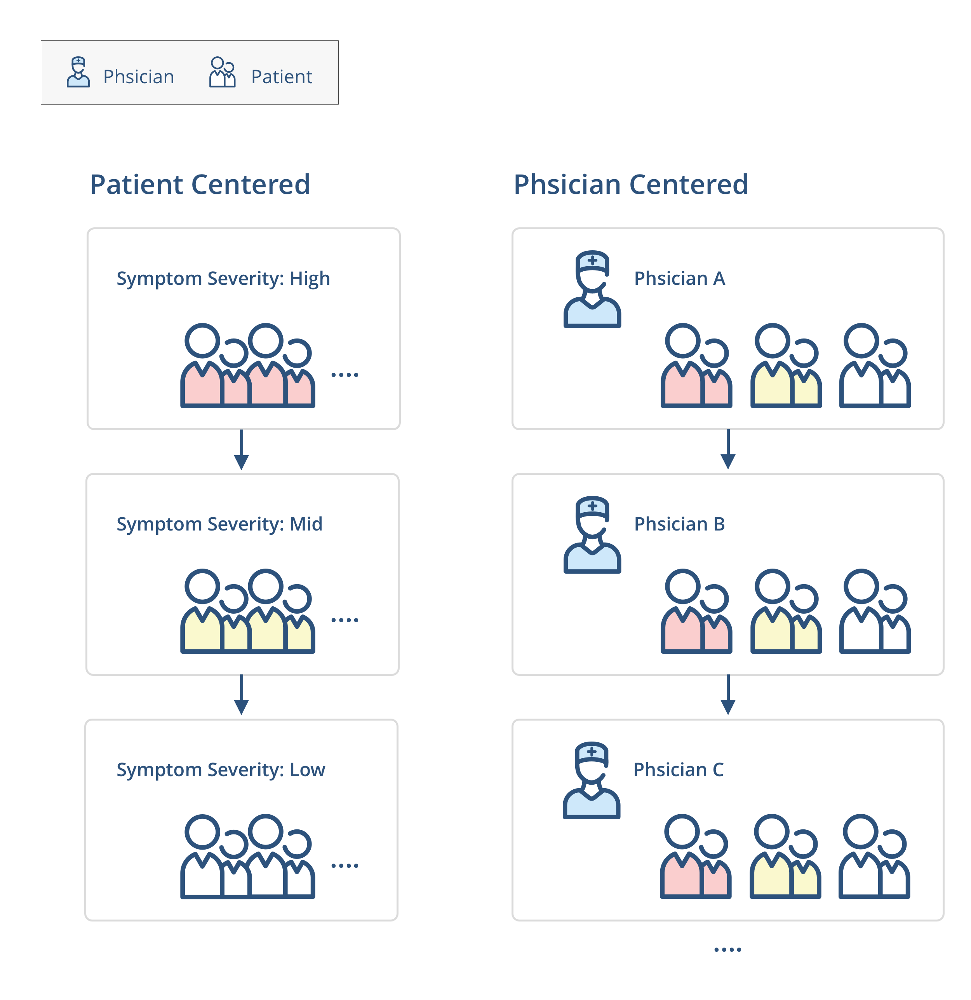

What did we learn from the test?
Patterns and Insights
This tool would not likely reduce edit requests. In fact, when you place a tool like this in people’s hands they expect that they will be able to edit the care plan.
﹒ ﹒ ﹒
Negative : (
Neutral : |
Positive : )
User Feedback
It’s helpful when doctors have different protocols or preferences.
I don’t need to go to the practice setting. It’s a good idea of having the two options of grouping things.
I know physicians I am looking at and covering with.
Make important things fast
In the navigation drawer, the entry point of “Editing you provider list” was promoted one layer up from the setting so it gets better visibility.

Minimize anxiety
This is designed to support users who are anxious about making mistakes in the clinical handover (transition) process.
Takeway
User research is always invaluable to the design process
Through talking to the users, I learned to consider the political environment and how it affects staff users’ workflow and the willingness of using certain features.
With the new feature of sorting by doctors (physician centered), it could mean that doctor gets priority. Therefore, some clinical staff would never use it even if they believe the feature can help them to increase work efficiency. This also reveals the political environment in the healthcare organization and should be considered in the future design.
Consider the political environment ─ Like it ≠ Use it
